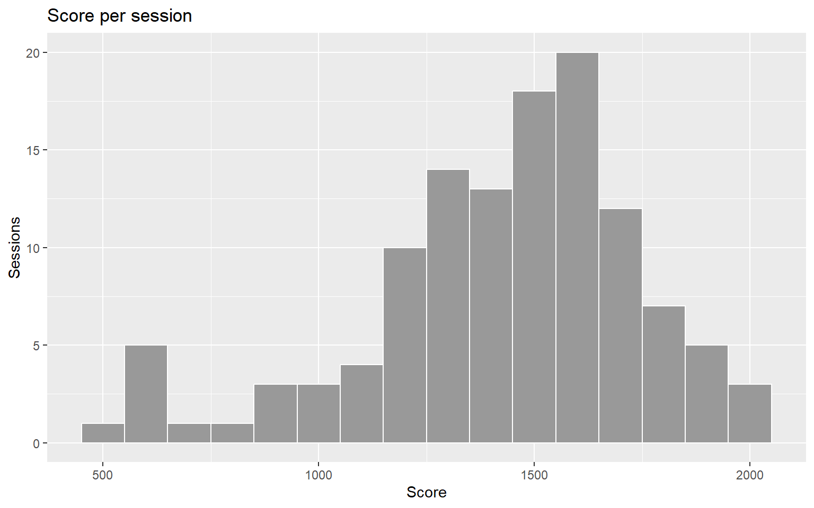
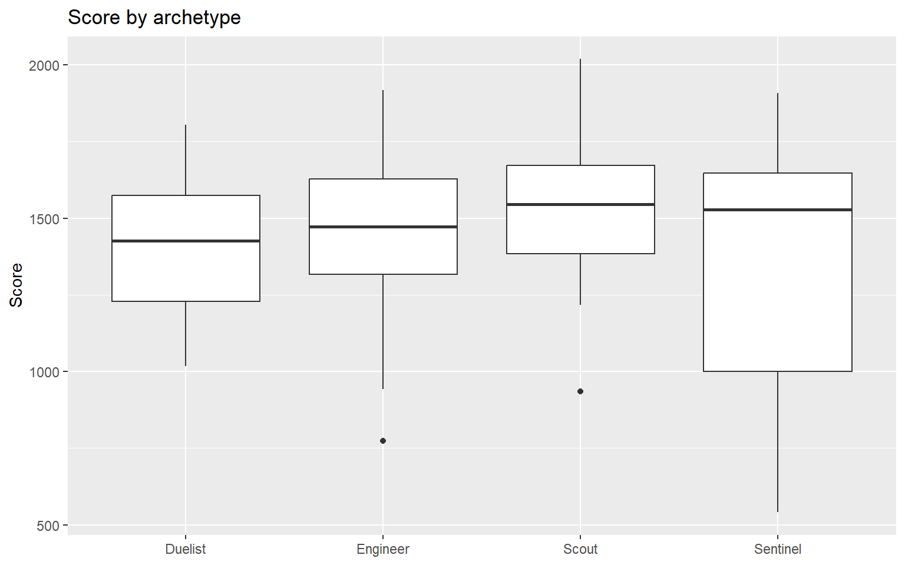
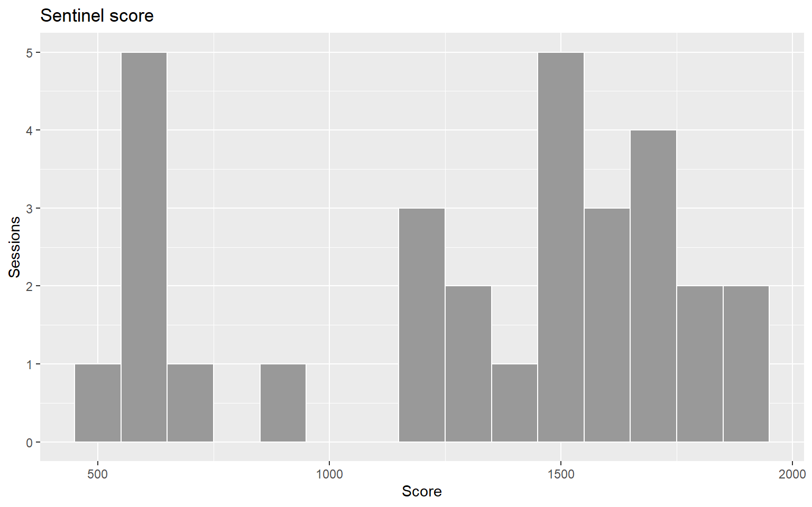
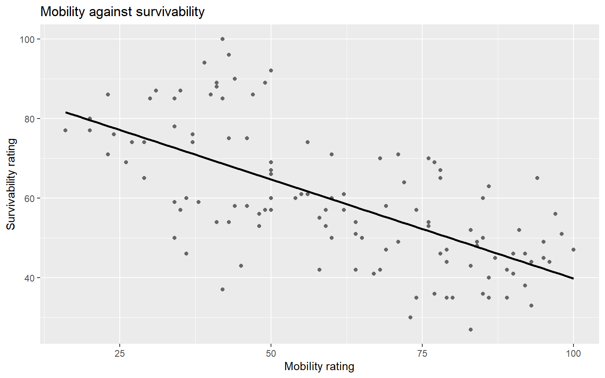

Figures, relationships, reshaping, and the report you will revise from
Overview
This lab ends the strand by answering one question from start to finish:
Does environmental guidance improve navigation without reducing enjoyment?
Part A builds the figures and relationships the answer needs, in ggplot2, and finds a correlation that means the opposite of what it seems to. Part B reshapes the survey, then assembles everything into a nine-part report in Quarto.
The report is the point. It is the artefact you revise from for the Week 8 practical. Every exercise in Part B adds a piece of it, and you should leave the lab with a report.qmd that renders.
Function
What it does
ggplot(), aes(), geom_*()
Build a figure from data, mapping and geometry
facet_wrap(), colour =
Split a figure by group
geom_smooth(method = "lm")
Add a straight-line trend to a scatterplot
labs()
Title, axis and legend labels
cor()
Strength and direction of a straight-line relationship, −1 to +1
pivot_longer()
Reshape wide columns into long rows
table(), prop.table()
Count, then turn counts into proportions
left_join()
Add columns from another table, matched on a key
quarto render
Turn a .qmd report into HTML
Learning outcomes
By the end of this lab you can:
rebuild a base R plot in ggplot2, and build a figure base R cannot easily produce;
measure a relationship with cor(), draw it with geom_smooth(), and check it within groups before trusting it;
identify a confounding variable and say what it does to a conclusion;
reshape a survey with pivot_longer() and summarise every item at once;
assemble a nine-part playtest report in Quarto, with every number computed, and render it;
write a finding as What → Pattern → Meaning → Action, including one that contradicts an earlier claim.
Ground rules
Choose, then justify. Several exercises have more than one sensible method; the written answer is where you say why you chose yours.
Type the code. Open the solution after your attempt, even when your attempt worked.
Keep every figure and number you produce. Part B puts them into the report.
No number goes into the report by hand. If it is a number, it is inline R.
If library(tidyr) or library(ggplot2) fails, run install.packages(c("dplyr", "tidyr", "ggplot2")) once in the Console.
sessions is the cleaned session data from Lab 02: one row per player per session, each player on one build. survey is the post-session questionnaire: one row per session, eight agreement items rated 1 to 5.
Part A — Visualise and relate
Exercise 01 — A histogram, rebuilt [Do]
Redraw Lab 01’s histogram of score in ggplot2, with bins 100 points wide and a title and axis labels a reader could follow.
TipSolution
ggplot(sessions, aes(x = score)) +geom_histogram(binwidth =100, fill ="grey60", colour ="white") +labs(title ="Score per session", x ="Score", y ="Sessions")

Write 1 sentence: point to the data, the mapping and the geometry in your code.
Exercise 02 — A boxplot, rebuilt [Do]
Redraw Lab 01’s boxplot of score by archetype in ggplot2, with labels.
TipSolution
ggplot(sessions, aes(x = archetype, y = score)) +geom_boxplot() +labs(title ="Score by archetype", x =NULL, y ="Score")

Write 2 sentences: the Sentinel box is the widest. Draw the Sentinel scores as a histogram and say what the box was hiding.
NoteCheck your answer
ggplot(filter(sessions, archetype =="Sentinel"), aes(x = score)) +geom_histogram(binwidth =100, fill ="grey60", colour ="white") +labs(title ="Sentinel score", x ="Score", y ="Sessions")

Two humps, not one wide spread: Sentinels either anchor the round or collapse early. A boxplot summarises one distribution and cannot show two.
Exercise 03 — The navigation figure [Apply]
Build the figure for part 4 of your report: the distribution of wrong_turns in each build, stacked so the x axes line up, labelled for a level designer. This is the figure base R cannot produce in one short call.
TipSolution
ggplot(sessions, aes(x = wrong_turns)) +geom_histogram(binwidth =1, fill ="grey60", colour ="white") +facet_wrap(~ build, ncol =1) +labs(title ="Wrong turns per session, by build",x ="Wrong turns", y ="Sessions")
facet_wrap(~ build, ncol = 1) gives one panel per build on a shared x axis, so the shift between builds is the first thing the reader sees. The fill is set, not mapped, because the panel labels already name the builds.
Write 2 sentences: what does this figure show that the two means from Lab 02 did not?
Exercise 04 — What goes with score? [Do]
Use cor() to measure how strongly score is related to awareness, and to shots_fired.
TipSolution
cor(sessions$awareness, sessions$score)
[1] 0.5907852
cor(sessions$shots_fired, sessions$score)
[1] 0.05307857
cor() gives a number from −1 to +1. Near 0 means no straight-line relationship; the sign gives the direction.
Write 2 sentences: a designer wants to reward players who fire more shots, “because they are the ones scoring”. What do you tell them?
Exercise 05 — The trade-off [Apply]
Draw survivability against mobility as a scatterplot with a straight-line trend, and measure the relationship with cor().
TipSolution
ggplot(sessions, aes(x = mobility, y = survivability)) +geom_point(colour ="grey40") +geom_smooth(method ="lm", se =FALSE, colour ="black") +labs(title ="Mobility against survivability",x ="Mobility rating", y ="Survivability rating")

cor(sessions$mobility, sessions$survivability)
[1] -0.6562375
geom_smooth(method = "lm") draws the straight line that best fits the points; se = FALSE leaves out the shaded band. The line and cor() describe the same relationship, one as a picture and one as a number.
Write 1 sentence: describe the relationship in words a balance designer would use.
Exercise 06 — Faster players are more fragile? [Decide]
The balance designer reads Exercise 05 and proposes a patch: “Faster players are more fragile, so when a Scout player gets faster, cut their health to match.” Redraw the scatterplot with each archetype in its own colour and its own trend line, then decide whether the patch follows from the data.
TipSolution
ggplot(sessions, aes(x = mobility, y = survivability, colour = archetype)) +geom_point() +geom_smooth(method ="lm", se =FALSE) +labs(title ="Mobility against survivability, by archetype",x ="Mobility rating", y ="Survivability rating", colour ="Archetype")
One defensible answer: no, the patch reads the data backwards. Across all players the correlation is -0.66. Within every archetype it is positive, from 0.3 to 0.6. The downward trend is the gap between archetypes: Scouts are built fast and fragile, Sentinels slow and tough. Within any one archetype, better players are better at both. Archetype is the confounding variable: it drives both measures, and ignoring it reverses the direction of the relationship.
What makes it defensible. It checks the relationship inside the groups the design is made of before drawing a conclusion about individuals, and it says what the overall correlation does show: the archetypes are balanced against each other as intended.
What would make it indefensible. Applying the patch because the correlation is strong. A strong correlation across groups says nothing about what happens to one player within a group.
Write 3 sentences: name the confound, say what it does to the conclusion, and say which part of the report this belongs in.
Part B — Reshape and report
Every exercise in this part produces a piece of report.qmd. Create the file now, in the project folder next to data/, and add to it as you go.
Exercise 07 — Wide to long [Do]
Reshape survey so that it has one row per session per item, with columns session_id, item and rating. Call it long, and check its size.
TipSolution
long <- survey |>pivot_longer(-session_id, names_to ="item", values_to ="rating")dim(long)
-session_id stacks every column except the key. 120 sessions × 8 items = 960 rows.
Write 1 sentence: why can you not group_by() the items in the wide survey?
Exercise 08 — Every item, both builds [Apply]
Use table() and prop.table() to show the distribution of ratings for every item. Then join each session’s build onto long and find the proportion of players agreeing (4 or 5) with each item in each build. Which item moved most between the builds?
margin = 1 makes each row of the table sum to 1. mean(rating >= 4) is the proportion agreeing, and pivot_wider(), the reverse of pivot_longer(), puts the two builds side by side so the change is one subtraction.
Write 2 sentences:objective_clear moved most. Which item would you have expected to move most, given what Build B changed, and did it?
NoteCheck your answer
level_navigable, since Build B added guidance to help players navigate. It moved from 35% agreeing to 43%, against objective_clear’s 8% to 38%. Build B cut wrong turns, but what players noticed was knowing where they were meant to go. That is worth a sentence in the report.
The research question has two halves. Test the second: did Build B reduce enjoyment? Use enjoyment from sessions (1–7) and would_play_again from the survey, and decide what the report may claim.
TipSolution
enjoy <-t.test(enjoyment ~ build, data = sessions)enjoy$estimate
# A tibble: 1 × 4
item A B change
<chr> <dbl> <dbl> <dbl>
1 would_play_again 0.5 0.517 0.0167
One defensible answer: the report may claim no meaningful reduction. Mean enjoyment was 3.93 in Build A and 3.93 in Build B. The 95% confidence interval for the difference runs from -0.35 to 0.35 on a seven-point scale, so any true difference is small. Agreement with would_play_again was 50% and 52%. Two different measures agree.
What makes it defensible. It rests on an interval, not on “not significant”, and on two measures rather than one. It claims no meaningful reduction, which the evidence supports, rather than no effect, which no test can show.
What would make it indefensible. “The p-value is above 0.05, so Build B has no effect on enjoyment.” Or “Build B is just as enjoyable” from one measure with no interval.
Write 2 sentences: both measures were taken straight after one session. What would you need to know before claiming Build B is as enjoyable over a week of play?
Exercise 10 — Start the report, and render it [Apply]
a setup chunk, hidden with echo: false, that loads the libraries and both CSVs;
under part 1, the research question;
under part 2, one sentence giving the number of sessions and players, with both numbers as inline R;
under part 4, the figure from Exercise 03.
Then render it from the Terminal with quarto render report.qmd and open report.html.
TipSolution
---title: "Tidebreak Build B: Playtest Report"---```{r}#| echo: falselibrary(readr)library(dplyr)library(tidyr)library(ggplot2)sessions <-read_csv("data/tidebreak_sessions.csv", show_col_types =FALSE)survey <-read_csv("data/tidebreak_survey.csv", show_col_types =FALSE)```## 1. Research questionDoes environmental guidance improve navigation without reducing enjoyment?## 2. Experimental designWe analysed `r nrow(sessions)` sessions from`r length(unique(sessions$player_id))` players, each of whomplayed one build only.## 3. Descriptive evidence## 4. Visual evidence```{r}#| echo: falseggplot(sessions, aes(x = wrong_turns)) +geom_histogram(binwidth =1, fill ="grey60", colour ="white") +facet_wrap(~ build, ncol =1) +labs(title ="Wrong turns per session, by build",x ="Wrong turns", y ="Sessions")```## 5. Statistical evidence## 6. Practical significance## 7. Qualitative evidence## 8. Limitations## 9. Design conclusion
The two inline expressions produce these values when the report renders:
nrow(sessions)
[1] 120
length(unique(sessions$player_id))
[1] 30
echo: false hides the code and keeps its output, which is what a reader of a report wants. Because the numbers are inline, the report corrects itself the next time the data changes.
Write 2 sentences: change one value in your copy of the CSV, render again, and describe what changed in the report and what you did not have to do.
NoteWhat you should see
The terminal ends with Output created: report.html. The page shows nine headings, the sentence under part 2 reads “120 sessions from 30 players”, and the two-panel histogram sits under part 4 with no code above it.
If the render stops with an error, the message names the line. The most common causes are a data path written as ../data/..., a chunk that uses a package it did not load, and a missing closing ```.
Exercise 11 — Limitations and the conclusion [Decide]
Write parts 8 and 9 of the report. Part 8 lists what could make your conclusion wrong. Part 9 is one finding in What → Pattern → Meaning → Action form that answers the research question. Every number is inline R.
TipSolution
wt <-t.test(wrong_turns ~ build, data = sessions)wt$estimate
Each of the 30 players contributed 4 sessions, so the 120 sessions are not independent, and the session-level test is more confident than the data justifies.
Every measure was taken after one session. Nothing here shows whether the difference lasts.
Cohorts were not perfectly balanced between the builds; the cohort table is in the report so the reader can judge.
Comments record how a session felt, and do not agree with the wrong-turn counts (see the Challenge).
Strong correlations in this data can reverse within archetypes (Exercise 06), so no relationship here is reported as a cause without checking within groups.
One defensible part 9.
What. Wrong turns per session in 120 sessions, and enjoyment on a seven-point scale, compared between Build A and Build B.
Pattern. Build B players averaged 5.5 wrong turns against Build A’s 8.9, a reduction of between 2.5 and 4.3 per session at 95% confidence. Enjoyment was unchanged, with a mean of 3.93 in both builds.
Meaning. The guidance works, and costs nothing players noticed.
Action. Keep Build B’s guidance and carry it into the next build. Retest with an on-screen objective added, since objective clarity was the item that moved most.
What makes it defensible. Part 8 names limitations specific to this data, not a generic “the sample was small”. Part 9’s Action follows from its Meaning, and its Pattern gives a size and an interval.
What would make it indefensible. A part 8 that lists nothing the reader could check, or a part 9 whose Action (“improve the level”) no one could start on.
Write 3 sentences: which limitation in your part 8 would most change your Action if it turned out to matter, and how would you test it?
Challenge — A finding that contradicts your own report [Decide]
A report that agrees with itself everywhere has usually stopped looking. Add a finding to part 7 or part 8 of your report that contradicts a claim made earlier in the same report, and write it so the reader is better informed, not confused.
ImportantOne defensible answer
themed <- sessions |>mutate(theme =case_when(grepl("lost|circles|meant to go|objective", comment) ~"Lost or unclear",grepl("route|exit|signposting", comment) ~"Found the way",grepl("Died|hard", comment) ~"Difficulty",TRUE~"General" ))table(themed$theme, themed$build)
A B
Difficulty 19 16
Found the way 12 9
General 6 4
Lost or unclear 23 31
enjoyed
FALSE TRUE
Difficulty 35 0
Found the way 0 21
General 0 10
Lost or unclear 54 0
The contradiction. Part 5 says Build B players took fewer wrong turns. Yet 31 Build B players left a comment about being lost or unclear, against 23 in Build A.
What. One free-text comment per session, 120 in all, categorised into four themes.
Pattern. “Lost or unclear” comments were more common in Build B (31) than in Build A (23), the opposite of the wrong-turn counts. Split by enjoyment instead of build, every one of those comments came from a player who rated enjoyment below 5.
Meaning. The comments track how the session felt, not where the player went. They do not undermine the wrong-turn result, but they show that players who had a poor session describe it as getting lost whichever build they played.
Action. Report the wrong-turn counts as the navigation evidence and the comments as evidence about mood. In the next playtest, ask a specific navigation question in the survey rather than relying on free text.
Other contradictions in this data that would serve: level_navigable barely moved while wrong turns fell (Exercise 08); the mobility–survivability trade-off reverses within archetypes (Exercise 06).
What would make it indefensible. Leaving the contradiction out because it spoils the story, or including it without saying which evidence the reader should trust and why.
Write 4 sentences, using What → Pattern → Meaning → Action:
What did you measure?
Pattern — what does the evidence show, and what does it contradict?
Meaning — which piece of evidence should the reader trust, and why?
Action — what changes in the next playtest because of it?
Output
Hand in two files: report.qmd and the report.html it renders to.
All nine parts present, each with at least one sentence.
Parts 3 to 7 each contain at least one computed number, table or figure from this lab or Lab 02.
No number in the prose typed by hand.
Part 9 written as What → Pattern → Meaning → Action, and the Challenge finding in part 7 or 8.
The report renders with quarto render report.qmd and no errors.
This is the report you revise from for the Week 8 practical. Anything you could not finish in the lab, finish before then: an unfinished part is easier to complete now than to reconstruct later.
Appendix — Common errors
WarningShow the error guide
Message
What it usually means
could not find function "ggplot"
You have not run library(ggplot2)
could not find function "pivot_longer"
You have not run library(tidyr)
Cannot use `+` with a single argument
A line starts with +. Move it to the end of the line above
object 'build' not found
A column name used outside aes()
'data/tidebreak_sessions.csv' does not exist
report.qmd is not in the project folder next to data/
object 'agree_by_build' not found when rendering
The report uses an object you made in the Console. Put the code in a chunk in the report